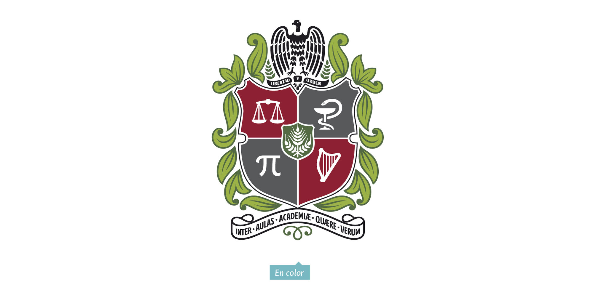
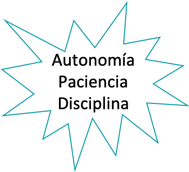

Producto de Datos#
El equipo!! 🦾🧠#
{kind=link}

Departamento de Informática y Computación · Especialización en Analítica
Msc. Sergio Alejandro Holguin Garcia
Ingeniero Biomédico - Universidad Autónoma de Manizales
Magíster en Ingeniería - Universidad Autónoma de Manizales
Candidato a Doctor en Ingeniería - Universidad de Caldas
Especialista en Deep Learning - DeepLearning.AI


Objetivos del curso#
El objetivo general de esta asignatura es desarrollar competencias en el diseño, implementación y gestión de productos de datos — dashboards, informes automatizados y aplicaciones de análisis — que permitan transformar grandes volúmenes de datos en valor tangible para las organizaciones.
De manera específica, buscaremos:
Comprender qué es un producto de datos y las características que lo hacen fiable, reutilizable e interoperable.
Diseñar e implementar soluciones de datos centradas en dominio, aplicando principios de calidad, modularidad y reutilización.
Construir pipelines de datos, dashboards y reportes automatizados utilizando herramientas como Python y frameworks web.
Aplicar técnicas avanzadas de contenerización, CI/CD y microservicios para el despliegue de productos de datos en producción.
Diseñar infraestructuras de datos escalables que soporten la estrategia analítica de una organización.
Contenido del curso#
Unidad 1 🚀
Introducción a Productos de Datos Revisión de conceptos de programación (Python). Desarrollo de reportes automáticos.
Unidad 2 🏗️
Características de Productos de Datos Calidad de datos, compartible e interoperable, modular y reutilizable, consumidores y productores de datos.
Unidad 3 📊
Desarrollo de Productos de Datos Diseño iterativo, aplicación de ciencia de datos a gestión de productos, dashboards, aplicaciones de datos y proyecto integrador.
Unidad 4 🐳
Técnicas Avanzadas Contenerización, integración y despliegue continuo (CI/CD), microservicios.
Unidad 5 ⚙️
Infraestructura de Datos Data pipelines, estrategia de datos escalable, centrado en dominio.
Información del curso#
Programa: Especialización en Analítica
Créditos: 4
Duración: 16 semanas
Horas semanales: 2 HAP + 9 HAI (11 THS)
Asistencia mínima: 80%

Bibliografía#
Estas son algunas de las referencias usadas para este curso.
Product Analytics
Joanne Rodrigues — Product Analytics: Applied Data Science Techniques for Actionable Consumer Insights — Pearson
Web App Development with R
Chris Beeley — Web Application Development with R using Shiny — Packt Publishing
Designing Data Products
Mario Meir-Huber — Designing Data Products: The Data Products Series — Technics Publications
Designing ML Systems
Chip Huyen — Designing Machine Learning Systems — O’Reilly Media
REST APIs with Django
William S. Vincent — REST APIs with Django: Build powerful web APIs with Python and Django — Packt Publishing
DevOps Engineering Toolkit
Greyson Chesterfield — DevOps Engineering Toolkit: Terraform, Ansible, Docker and Beyond — Kindle
Reglas de Juego#
Clases magistrales para conceptualización del tema.
Quices.
Trabajo en clase y actividades: Notebooks y repositorios.
Proyecto Integrador.
Distribución de Evaluación#